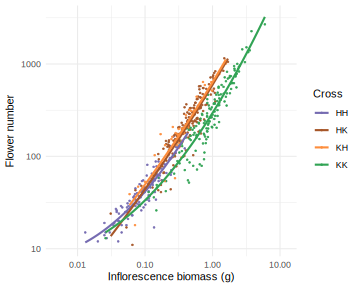
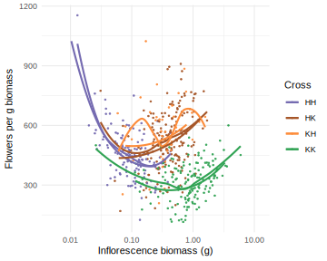
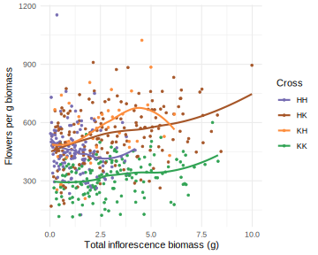

library(tidyverse)
library(RColorBrewer)
library(glmmTMB)
library(car)
library(broom)
library(emmeans)
library(knitr)
knitr::opts_chunk$set(comment="", cache=T, warning = F, message = F, fig.path = "figures/", dev = "svglite", fig.width=5, fig.height=4)
options(digits=4, knitr.kable.NA = "") # for kables
load("data/rims_data.rda")
sxc.labels <- set_names(c("K intrapop", "K interpop", "K x H", "H x K", "H interpop", "H intrapop"), sxc.levels)
F1.col <- set_names(c(brewer.pal(3,"Greens")[2:3],brewer.pal(9,"Oranges")[5], brewer.pal(9,"Set1")[7], brewer.pal(3,"Purples")[3:2]), sxc.levels)Datasets
traits %>% filter(generation !="P") %>% select(c(generation,ylab, yvar, data, type)) %>% kable| generation | ylab | yvar | data | type |
|---|---|---|---|---|
| F1 | Capsule formation | capsule.formed | seeds | binary |
| F1 | Viable seeds if capsule formed | viable.seeds | seeds.nonzero | continuous |
| F1 | Germination | prop.germ | germination | binary |
| F1 | Survival | alive | survflr | binary |
| F1 | Vegetative biomass (g) | veg.biomass.g | vegbiomass | continuous |
| F1 | Flowering if survived | flowered | survflr.alive | binary |
| F1 | Days to flower | firstflower | survflr | continuous |
| F1 | First inflorescence biomass (g) | firstinflo.biomass.g | survflr | continuous |
| F1 | Inflorescence biomass (g) | inflo.biomass.g | inflobiomass.sum | continuous |
| F1 | Flower number | flower.number | inflobiomass.sum | continuous |
| F1 | Pollen viability | prop.viable | pollen | binary |
| F1 | Pollen grains per anther | total.per.anther | pollen | continuous |
| F2 | Capsule formation | capsule.formed | f1seeds | binary |
| F2 | Viable seeds if capsule formed | viable.seeds | f1seeds.nonzero | continuous |
| F2 | Seed mass (mg) | seed.mass.mg | f1seedmass | continuous |
| F2 | Pollen viability | prop.viable | f2pollen | binary |
| F2 | Pollen grains per anther | total.per.anther | f2pollen | continuous |
| F3 | Capsule formation | capsule.formed | f1seeds | binary |
| F3 | Viable seeds if capsule formed | viable.seeds | f1seeds.nonzero | continuous |
Sample sizes
F1 <- set_names(datanames[1:6]); F1[[6]] <- "inflobiomass.sum"
F2 <- set_names(datanames[7:10])
map_dfr(F1, ~ tally(get(.)), .id="dataset") %>%
pivot_wider(names_from=dataset, values_from=n) %>% kable(caption="F1 datasets totals")| seeds | germination | vegbiomass | survflr | pollen | inflobiomass |
|---|---|---|---|---|---|
| 533 | 236 | 1067 | 1567 | 197 | 1019 |
map_dfr(F1, ~ tally(group_by(get(.), crosstype, momsp, dadsp)), .id="dataset") %>%
pivot_wider(names_from=dataset, values_from=n) %>% kable(caption="F1 datasets by crosstype and species")| crosstype | momsp | dadsp | seeds | germination | vegbiomass | survflr | pollen | inflobiomass |
|---|---|---|---|---|---|---|---|---|
| between | hook | hook | 64 | 26 | 257 | 377 | 15 | 247 |
| between | kaal | kaal | 55 | 37 | 193 | 254 | 37 | 194 |
| within | hook | hook | 47 | 19 | 129 | 223 | 15 | 118 |
| within | kaal | kaal | 34 | 19 | 85 | 125 | 20 | 89 |
| hybrid | hook | kaal | 156 | 62 | 332 | 469 | 61 | 314 |
| hybrid | kaal | hook | 177 | 73 | 71 | 119 | 49 | 57 |
map_dfr(F1, ~ tally(group_by(get(.), crosstype, momsp, dadsp, mompop, dadpop)), .id="dataset") %>%
pivot_wider(names_from=dataset, values_from=n) %>% kable(caption="F1 datasets by crosstype and population")| crosstype | momsp | dadsp | mompop | dadpop | seeds | germination | vegbiomass | survflr | pollen | inflobiomass |
|---|---|---|---|---|---|---|---|---|---|---|
| between | hook | hook | WK | 879WKG | 35 | 14 | 149 | 241 | 9 | 145 |
| between | hook | hook | 879WKG | WK | 29 | 12 | 108 | 136 | 6 | 102 |
| between | kaal | kaal | 892WKG | 904WPG | 11 | 8 | 31 | 44 | 7 | 30 |
| between | kaal | kaal | 892WKG | 3587WP | 5 | 3 | 3 | 12 | 9 | 3 |
| between | kaal | kaal | 904WPG | 892WKG | 10 | 8 | 83 | 94 | 6 | 82 |
| between | kaal | kaal | 904WPG | 3587WP | 7 | 4 | 23 | 30 | 5 | 24 |
| between | kaal | kaal | 3587WP | 892WKG | 11 | 7 | 24 | 31 | 4 | 26 |
| between | kaal | kaal | 3587WP | 904WPG | 11 | 7 | 29 | 43 | 6 | 29 |
| within | hook | hook | WK | WK | 25 | 6 | 72 | 128 | 10 | 71 |
| within | hook | hook | 879WKG | 879WKG | 22 | 13 | 57 | 95 | 5 | 47 |
| within | kaal | kaal | 892WKG | 892WKG | 9 | 6 | 5 | 15 | 7 | 5 |
| within | kaal | kaal | 904WPG | 904WPG | 14 | 6 | 63 | 83 | 6 | 68 |
| within | kaal | kaal | 3587WP | 3587WP | 11 | 7 | 17 | 27 | 7 | 16 |
| hybrid | hook | kaal | WK | 892WKG | 28 | 11 | 81 | 118 | 9 | 75 |
| hybrid | hook | kaal | WK | 904WPG | 20 | 8 | 34 | 61 | 10 | 33 |
| hybrid | hook | kaal | WK | 3587WP | 26 | 10 | 27 | 47 | 7 | 27 |
| hybrid | hook | kaal | 879WKG | 892WKG | 31 | 11 | 78 | 100 | 18 | 74 |
| hybrid | hook | kaal | 879WKG | 904WPG | 23 | 10 | 64 | 84 | 17 | 65 |
| hybrid | hook | kaal | 879WKG | 3587WP | 28 | 12 | 48 | 59 | 40 | |
| hybrid | kaal | hook | 892WKG | WK | 13 | 7 | ||||
| hybrid | kaal | hook | 892WKG | 879WKG | 33 | 15 | 18 | 24 | 8 | 16 |
| hybrid | kaal | hook | 904WPG | WK | 25 | 10 | 1 | 7 | 1 | |
| hybrid | kaal | hook | 904WPG | 879WKG | 36 | 13 | 34 | 53 | 25 | 27 |
| hybrid | kaal | hook | 3587WP | WK | 32 | 12 | 1 | 7 | 1 | |
| hybrid | kaal | hook | 3587WP | 879WKG | 38 | 16 | 17 | 28 | 14 | 14 |
map_dfr(F2, ~ tally(get(.)), .id="dataset") %>%
pivot_wider(names_from=dataset, values_from=n) %>% kable(caption="F2 datasets totals")| f1seeds | f1seedmass | f2pollen | f2seeds |
|---|---|---|---|
| 1900 | 230 | 134 | 222 |
map_dfr(F2, ~ tally(group_by(get(.), generation, momdadcross)), .id="dataset") %>%
pivot_wider(names_from=dataset, values_from=n) %>% kable(caption="F2 datasets by cross")| generation | momdadcross | f1seeds | f1seedmass | f2pollen | f2seeds |
|---|---|---|---|---|---|
| Fcontrol | HK x control | 38 | |||
| Fcontrol | KH x control | 74 | |||
| FF | HK x HK | 97 | 15 | 11 | 38 |
| FF | KH x HK | 1 | |||
| FF | KH x KH | 195 | 45 | 16 | 35 |
| FP | HK x H | 109 | 18 | 10 | 28 |
| FP | HK x K | 75 | 7 | 6 | 7 |
| FP | KH x H | 191 | 28 | 17 | 25 |
| FP | KH x K | 177 | 29 | 16 | 22 |
| Pcontrol | H x control | 37 | |||
| Pcontrol | K x control | 101 | |||
| PF | H x HK | 57 | 23 | 17 | 26 |
| PF | H x KH | 91 | 56 | 22 | 11 |
| PF | K x HK | 41 | 3 | 8 | 12 |
| PF | K x KH | 83 | 6 | 11 | 18 |
| PP | H x H | 111 | |||
| PP | H x K | 156 | |||
| PP | K x H | 177 | |||
| PP | K x K | 89 |
F1 Generation
Models
F1.mod <- list(
firstflower = glmmTMB(firstflower ~ sxc + (1|mompid) + (1|dadpid), data=survflr),
firstinflo.biomass.g = glmmTMB(firstinflo.biomass.g ~ sxc + collect + (1|mompid) + (1|dadpid), data=survflr),
inflo.biomass.g = glmmTMB(inflo.biomass.g ~ sxc + collect + (1|mompid) + (1|dadpid), data=inflobiomass.sum),
flower.number = glmmTMB(flower.number ~ sxc + collect + (1|mompid) + (1|dadpop), data=inflobiomass.sum),#dadpid model prob.
veg.biomass.g = glmmTMB(veg.biomass.g ~ sxc + collect + (1|mompid) + (1|dadpid), data=vegbiomass),
total.per.anther = glmmTMB(total.per.anther ~ sxc + (1|mompid) + (1|dadpid), data=pollen),
viable.seeds = glmmTMB(viable.seeds ~ sxc + (1|mompid) + (1|dadpop), data=filter(seeds, viable.seeds>0),
family="truncated_nbinom1"),
prop.germ = glmmTMB(prop.germ ~ sxc + (1|mompid) + (1|dadpid), family="binomial", data=germination, weights = planted),
alive = glmmTMB(alive ~ sxc + (1|mompid) + (1|dadpid), family="binomial", data=survflr),
flowered = glmmTMB(flowered ~ sxc + (1|mompid) + (1|dadpid), family="binomial", data=filter(survflr, alive)),
prop.viable = glmmTMB(prop.viable ~ sxc + (1|mompid) + (1|dadpid), family="binomial", data=pollen, weights = total),
capsule.formed = glmmTMB(capsule.formed ~ sxc + (1|mompid) + (1|dadpop), family="binomial", data=seeds))
#TODO try to find dadpid for seedsInference
F1.test <- map_dfr(F1.mod, ~car::Anova(.) %>% tidy(), .id="trait")
F1.emm <- map_dfr(F1.mod, ~emmeans(., ~sxc) %>% summary(type="response") %>% #average over collect date
tidy %>% rename(estimate=any_of(c("response","prob"))), .id="trait") Plots
plot_F1 <- function(emm, data, yvar, ylab, type="continuous") {
data <- get(data)
if(type=="continuous") {
p <- ggplot(data, aes_string(y=yvar, x="sxc", fill="sxc")) +
geom_violin(draw_quantiles = (1:3)/4) +
geom_pointrange(data=filter(emm, trait==yvar), aes(y=estimate, ymax=conf.high, ymin=conf.low)) +
scale_fill_manual(values=F1.col) + guides(fill="none") +
scale_y_continuous(name = ylab, expand = expansion(mult=c(0, 0.05)), limits=c(0,NA))
} else if(type=="binary") {
p <- data %>% drop_na(all_of(yvar)) %>%
group_by(sxc, mompop, dadpop) %>% summarize(across(all_of(yvar), ~sum(.)/n()), n=n(), .groups="drop") %>%
ggplot(aes_string(y=yvar, x="sxc", color="sxc")) +
geom_point(size=4)+
geom_pointrange(data=filter(emm, trait==yvar) %>%
mutate(conf.low = ifelse(conf.high-conf.low>0.9,NA,conf.low),
conf.high = ifelse(conf.high-conf.low>0.9,NA,conf.high)),
aes(y=estimate, ymax=conf.high, ymin=conf.low), color="black") +
scale_color_manual(values=F1.col) + guides(color="none") +
scale_y_continuous(ylab, limits=c(0,1), labels=~scales::percent(.,accuracy=1))
}
p <- p + scale_x_discrete("Cross", labels = sxc.labels) +
theme_minimal() + theme(panel.grid.major.x = element_blank())
print(p)
}
traits %>% filter(generation=="F1") %>% select(data, yvar, ylab, type) %>%
pwalk(plot_F1, emm=F1.emm)


Flower biomass regression
ggplot(inflobiomass, aes(x=inflo.biomass.g, y=flrs, color=cross)) +
geom_point() + geom_smooth(method="lm", se=F) +
geom_rug(data=inflobiomass.sum, aes(x=inflo.biomass.g/inflo, y=10), sides="b") +
scale_x_log10() + scale_y_log10() +
scale_color_manual(values=set_names(F1.col, c("KKwithin","KK", "KH", "HK", "HH", "HHwithin"))[-c(1,6)]) +
theme_minimal() + labs(y="Flower number", x="Inflorescence biomass (g)", color="Cross")
ggplot(inflobiomass, aes(x=inflo.biomass.g, y=flrs/inflo.biomass.g, color=cross)) +
geom_point() + geom_smooth(se=F) +
scale_x_log10() + scale_y_continuous() +
scale_color_manual(values=set_names(F1.col, c("KKwithin","KK", "KH", "HK", "HH", "HHwithin"))[-c(1,6)]) +
theme_minimal() + labs(y="Flowers per g biomass", x="Inflorescence biomass (g)", color="Cross")
ggplot(inflobiomass.sum, aes(y=inflo, x=sxc, fill=sxc)) +
geom_boxplot() +
scale_fill_manual(values=F1.col) + guides(fill="none") +
scale_y_continuous("Inflorescences", expand = expansion(mult=c(0, 0.05)), limits=c(0,NA))+
scale_x_discrete("Cross", labels = sxc.labels) +
theme_minimal() + theme(panel.grid.major.x = element_blank())
ggplot(inflobiomass.sum, aes(y=inflo.biomass.g/inflo, x=sxc, fill=sxc)) +
geom_boxplot() +
scale_fill_manual(values=F1.col) + guides(fill="none") +
scale_y_continuous("Biomass per inflorescence (g)", expand = expansion(mult=c(0, 0.05)), limits=c(0,NA))+
scale_x_discrete("Cross", labels = sxc.labels) +
theme_minimal() + theme(panel.grid.major.x = element_blank())
ggplot(inflobiomass.sum, aes(y=flower.number/inflo, x=sxc, fill=sxc)) +
geom_boxplot() +
scale_fill_manual(values=F1.col) + guides(fill="none") +
scale_y_continuous("Flowers per inflorescence", expand = expansion(mult=c(0, 0.05)), limits=c(0,NA))+
scale_x_discrete("Cross", labels = sxc.labels) +
theme_minimal() + theme(panel.grid.major.x = element_blank())